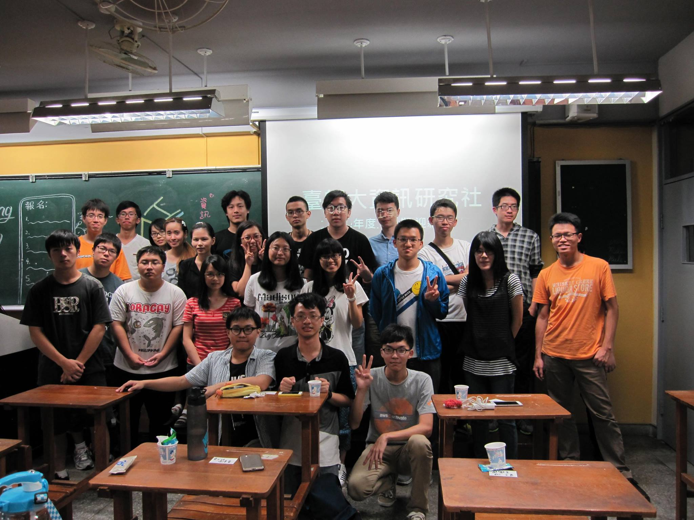
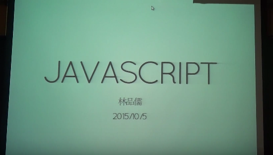
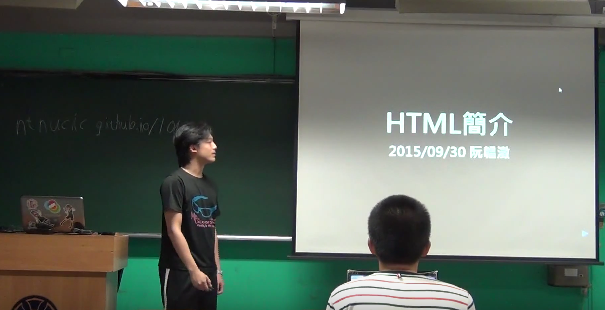
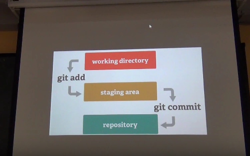
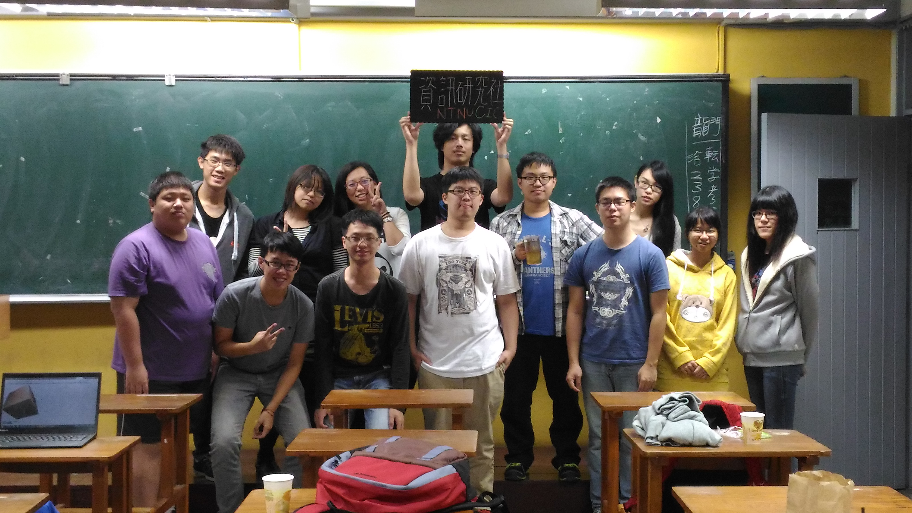
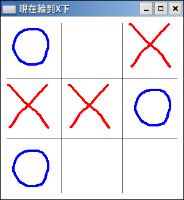
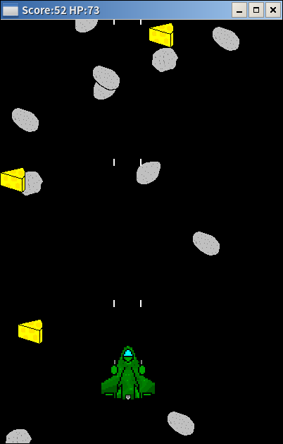
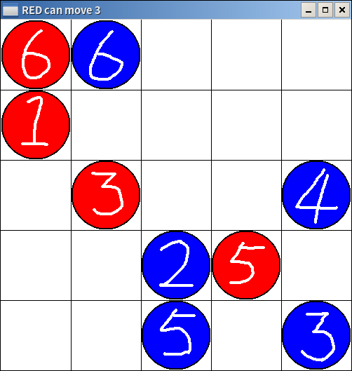
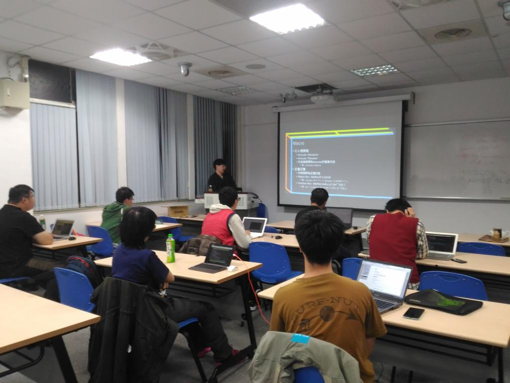
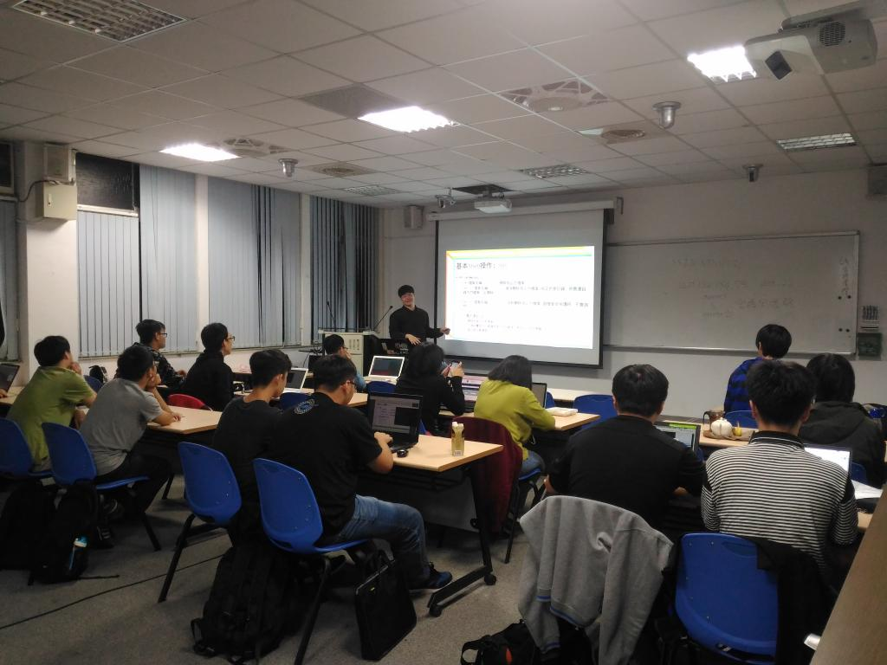

社團宗旨
官方版
資訊領域的發展日新月異，閉門造車是無法跟上發展的腳步，因此資訊研究社的宗旨就是提供一個讓所有對資訊有興趣的人可以互相交流學習，並找到志同道合朋友的地方，也讓那些對資訊領域有興趣，卻不得其門而入者可以有一個加入我們的方法。現實版
歡迎來到資研社泡茶聊天寫程式上屆回顧
迎新擺攤
第一次迎新茶會
社課-Javascript
社課-HTML
主題式社課
校慶擺攤
第二次迎新茶會
講座 x 服務學習
SITCON 2016
擷取自:http://sitcon.org/2016
上學期回顧
社課-井字棋
社課-射擊遊戲
社課-愛因斯坦棋
社課-守塔遊戲

講座-編譯與連結
講座-Linux
支持社團永續發展
社費:200元
繳過的就就算斗內吧歡迎各位加入我們！
| FB粉絲頁 | FB社團 | 課程網頁 |
Pretty Code
function linkify( selector ) {
if( supports3DTransforms ) {
var nodes = document.querySelectorAll( selector );
for( var i = 0, len = nodes.length; i < len; i++ ) {
var node = nodes[i];
if( !node.className ) {
node.className += ' roll';
}
}
}
}
Code syntax highlighting courtesy of highlight.js.